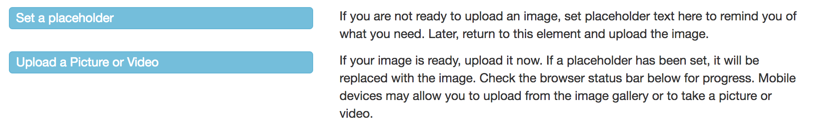
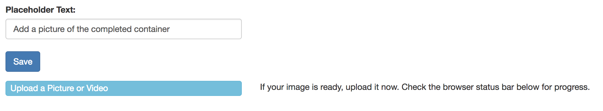

Decide if you want to set a Placeholder or Upload an Image.
You may be creating the wizard as you perform the task but are not ready to upload images and video immediately. So instead, add a placeholder, a note, to upload one later. You may want to do this for several reasons.
We recommend that movies be as short as possible. Just show something, in a few seconds, that cannot be easily explained with words and pictures. For example, You can show how chefs professionally dice an onion in under 10 seconds of video but it would take a lot of words and pictures to explain it. You may also need to convert your movie to mp4 format. That is the only format that WizardMaker will show.
To add a placeholder just select the Set a Placeholder button. The two buttons will be replace with an input field and a Save button. Just type your note such as “Put nice shot of garden here” and select Save.
Later you can return to this screen and select Upload a Picture or Video to replace the placeholder with a picture or video.
If you have pictures and video ready to upload
If you shoot your video with an iPhone and own a Mac. Download it to the Mac, change the file name extension from .m4v to .mp4 and upload it using the method discussed above. If you have an MOV file, open iMove and import it as media. Then share it as a file. Pick a low resolution and medium quality to keep the file size down. For other formats you can find free converters in the App Store for Mac.